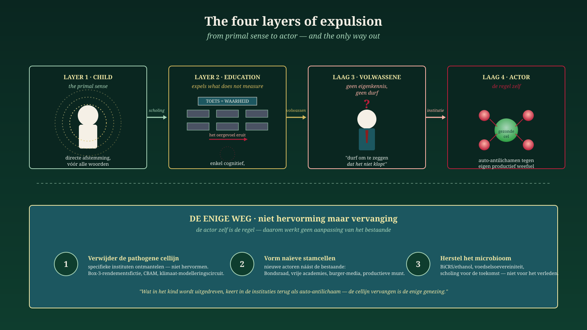

The Actor is the Rule
Why reform is impossible and replacement inevitable — and how the medicine of autoimmune disease shows us how to truly heal the Dutch system.
Jacobus van Merksteijn · Malta, June 2026
In three earlier contributions we built an argument that begins with the newborn child and ends with the sick body politic. In this fourth piece, the argument is taken to its ultimate conclusion. What emerges is no longer a diagnosis and no longer a call for better policy. What emerges is a revolutionary question: which actors will still exist in 2030, and which will have been replaced?
The three preceding layers, briefly summarised
Layer 1 — In Space for the primal sense we established that something is present in the human being before it can speak: a direct, physical attunement between people. No mysticism — a neurophysiological fact, supported by Porges and McGilchrist. But this primal sense is unconsciously unlearned by an upbringing and schooling system entirely focused on the measurable, the linguistic and the cognitive. What does not fit in a test is made invisible. What is made invisible dies out. That is the first expulsion — not of people, but of a capacity within people.
Layer 2 — In The feeding line we followed what happens to that expelled person in his adult life. "The courage to say that something is wrong is absent through lack of self-knowledge — a structural flaw, not a character flaw." Our institutions, procedures, decision-making and education are built on evolutionary action and thought: small steps, consensus formation, caution. Whoever moves within that is accepted. Whoever moves outside it is by definition alien to the system. Today's schooling prepares for yesterday. What the future needs, we do not learn.
Layer 3 — In The immune system that attacks healthy cells we described the consequence at system level. A healthy body recognises intruders and eliminates them. A sick body attacks its own healthy cells. That is how the Netherlands operates now: the farmer, the SME, the owner-director, the craftsman, the inventor, the rebel with knowledge — all healthy cells being attacked by auto-antibodies. Not out of malice. Out of self-preservation of the sick system.
Layer 4 — the actor itself
And now the step that makes the three preceding layers into a revolutionary finding: it is not the structures that are sick, it is the actors. The Ministry of Climate is not a neutral apparatus executing bad policy. It is a collection of people so shaped by education, selection and culture that they no longer know the primal sense, have not dared to develop self-knowledge, and therefore automatically act as auto-antibodies against any divergent knowledge. The CPB is not accidentally blind to BiCRS — the CPB is the organisation that can only calculate what fits in the old model. The FNV does not accidentally produce anti-productive policy — the FNV is the crystallised expression of a worldview that sees productivity as a threat.
The fault is not that our institutions act wrongly.
The fault is that our institutions are what they are.Reform is impossible because the reformer and the object to be reformed are one and the same. The only way is replacement — and that begins by acknowledging that the current actors will never themselves pass judgement on their own right to exist.
This is not rhetoric. This is precisely what medicine has had to learn in the treatment of autoimmune diseases. Generations of doctors tried to "re-educate", "redirect", "calm with immunosuppression" the sick immune system. What became clear after fifty years: the auto-immune B-cell line is not a healthy cell that has been miscalibrated. It is a cell line whose identity itself is auto-immune. You cannot re-educate it. You must remove it. After that, new B cells can arise from naïve stem cells — cells that never had the faulty programming.
This is what CAR-T cell therapy does for lupus, multiple sclerosis and scleroderma. And this is what politics in the Netherlands needs.
Five medical therapies, five political equivalents
The medicine of autoimmune disease knows five ascending treatment routes. Each has a direct political mirror. Anyone who places them side by side immediately sees where Dutch parties and administrators are positioned — and what the necessary end goal is.

Five ascending treatment routes — from symptom management (route 1) to microbiome restoration (route 5). The winning combination: route 2 + 4 + 5.
Route 1 · Broad immunosuppression ↔ subsidies and purchasing-power packages
The doctor prescribes prednisone. The immune system is suppressed wholesale — healthy and sick together. The symptoms recede briefly, but the disease continues and the patient becomes dependent on the drug. Side effects accumulate, infections threaten, the body weakens.
Translated politically: subsidies, benefits, energy compensation, purchasing-power packages, generic wage increases via collective agreements. This is the mode of GroenLinks-PvdA, D66, VVD, CDA and NSC. It is the mode of FNV and CNV. Everyone receives a pay-out, the patient feels briefly relieved, but the underlying disease process — the system's attack on its own productive tissue — continues unabated. And every pay-out makes the paying institution more indispensable.
Route 2 · CAR-T cell therapy ↔ dismantling specific institutions
The doctor harvests T cells from the patient and programmes them with a receptor (CD19 or BCMA) that specifically recognises and kills the faulty B-cell line. The rest of the immune system remains intact. In lupus, MS and scleroderma, patients have gone medicine-free into remission after a single treatment.
Translated politically: this is not "a smaller government", this is not "tax relief in general terms". This is concretely abolishing the Box-3 notional-yield fiction. Withdrawing CBAM. Removing the nitrogen assessment circuit (committee, modellers, lawyers) as a whole. Dismantling the climate-modelling apparatus. JA21 and BBB point cautiously in this direction; parts of FvD and PVV in sharper form. But pointing is not the same as executing. CAR-T only works when the markers are precise — otherwise healthy cells are also hit.
Route 3 · Autologous stem cell transplantation ↔ institutional revolution
The doctor first harvests the stem cells, then chemically burns away the entire immune system, and then infuses the patient's own stem cells back. It is a reset: from naïve cells a fresh immune system is built without the auto-immune memory. Works — or destroys. The intermediate phase is vulnerable: in immune aplasia, any infection can be fatal.
Translated politically: institutional revolution. Constitutional revision, electoral system reform, entire ministries abolished, monetary realignment, EU position reconsidered. Nova Democratia/VMP and parts of FvD point in this direction. The method works — but requires strong logistics and political immunity to panic during the intermediate phase. Unsuitable for mild cases; sometimes the only option for terminally refractory situations.
Route 4 · Treg therapy and tolerogenic cells ↔ new actors alongside the old
This is the most underexposed and at the same time the most fundamental route. The doctor cultivates regulatory T cells (Tregs) in the laboratory, multiplies them, programmes them with a receptor for the specific auto-antigen, and infuses them back. Or: he reprogrammes dendritic cells so that they present the auto-antigen in a peace signal. The immune system learns anew that this tissue is its own. Not brute suppression, no total reset — re-education via a new cell line alongside the existing one.
Translated politically: not "reforming" the FNV, but founding a productive workers' movement alongside the FNV. Not "pluralising" the NOS, but building a citizen-funded pluralistic media network that renders the NOS irrelevant. Not "adapting" the Senate, but establishing a Federal Council that structurally embeds knowledge counter-power. Not hoping the university reforms itself, but founding free academies that render the old ones superfluous. This is not adaptation, this is replacement — but in fluid form, with construction before demolition.
Route 5 · Nutrition and microbiome ↔ economic-cultural microbiome
The least spectacular and perhaps the most fundamental route. Short-chain fatty acids — formed by gut bacteria from fibre — directly regulate Treg formation. A poor microbiome delivers too few Tregs, hence chronic inflammation. A disrupted gut wall continuously lets through stimuli that inflame the immune system. Without restoration of the microbiome, no other therapy works lastingly.
Translated politically: this is the economic-cultural microbiome of the Netherlands. BiCRS/ethanol as its own carbon cycle. Food sovereignty. A productive currency that finances innovation instead of circulating debts. Wealth formation among employees and SMEs rather than among wealth funds alone. Education for the future instead of for the past. And, in a line that leads directly back to the first manifesto of this tetralogy: space for the primal sense in primary school, before the cognitive edifice is erected. That is where Treg formation begins literally: in an upbringing that does not first expel the child.
The revolutionary insight
No single route works alone. The winning combination is route 2 + 4 + 5: targeted dismantling of pathogenic institutions, parallel construction of new actors alongside the old, and restoration of the economic and cultural nutritional base.
Route 3 — complete institutional reset — remains in reserve for when routes 2-4-5 are made impossible by the patient's own immune blockade. That means: if the sick patient refuses treatment and chooses to continue with symptom suppressants.
Route 1 — subsidies and purchasing-power packages — must be consciously phased out. Not abruptly, because the patient has become dependent. But every extension of route 1 increases the power of the attacking cell line.
The attacking actors and the protected tissue
Anyone who wants to stop the autoimmune reaction must first explicitly name which actors attack and which tissue is being attacked. That distinction has been deliberately blurred in current Dutch politics — linguistically, legally and morally — so that the attack can continue without resistance. Here is the clear naming:
| Attacked healthy cell (productive tissue) | Attacking auto-antibody actor (current) | Replacement actor (Treg / new cell line) |
|---|---|---|
| The farmer · food and carbon cycle | Min. Climate, nitrogen lawyers, RVO | Food sovereignty council with farmer as seat-holder |
| The owner-director · capital formation and succession | Tax authority Box-3, GL-PvdA fiscal policy | Co-ownership funds, entrepreneur constitutional rights |
| The SME · employment and innovation | RVO regulatory burden, EU directive chain | Free zones, fiscally stable years, single-counter state |
| The craftsman · production and craftsmanship | Ministry of Education, cognitive-testing culture | Vocational schools with primal-sense pedagogy, master-apprentice |
| The inventor · future and patent power | Patent bureaucracy, EU subsidy gates | Free academies, inventor constitutional right, BiCRS path |
| The rebel · naming and course correction | Follow-the-canon media, CPB monoculture, party disciplines | Citizen media foundations, Federal Council, Nova Democratia/VMP |
The revolution roadmap
The combination of insights from the tetralogy and the medical analogy yields a concrete, replicable route. Not revolution as a storm that sweeps everything away, not revolution as a violent moment — but revolution as cell replacement in a living organism, in four successive phases.

From diagnosis to goal in four steps — CAR-T intervention (first 100 days), stem cells forming (1-3 years), new organs alongside the old, microbiome fed for the long haul.
Step 1 — The CAR-T intervention · first 100 days
Targeted. Fast. Specific. No broad sweep, no "we are going to change everything", but three or four sharply identified interventions whose markers are unambiguous. Scrapping the Box-3 notional-yield fiction and replacing it with actual asset-return taxation. Withdrawing CBAM. Dismantling the nitrogen assessment circuit. A handful of other bottlenecks as candidates. Not abolishing entire ministries — too early for that, and the next system must be ready first — but removing specific cell lines, as CAR-T does.
Step 2 — Stem cell formation · construction phase 1 to 3 years
In parallel with the CAR-T intervention, naïve tissue is formed. This is where Nova Democratia/VMP distinguishes itself in principle from an ordinary "new party in the existing landscape". A naïve stem cell cultivated in the infected thymus acquires the same flaw — which is why the cell line must be formed outside the existing system. Own membership culture, own selection criteria that rest not on file knowledge but on self-knowledge (in the sense of layer 2: courage, self-reflection, recognition of the primal sense). Own schooling for administrators, free of the frameworks that caused the infection. This is work of years, not months — but it is the most important work of the entire revolution.
Step 3 — Establishing new organs · parallel structures
A Federal Council alongside the Senate. Free academies alongside universities. Citizen media foundations alongside the NOS and major newspapers. Productive workers' associations alongside FNV and CNV. Co-ownership funds alongside the pension fund monoculture. Not within the old — alongside it. The old becomes irrelevant of its own accord once the new organs are functioning — electorally, economically, culturally. That is the tolerance route: not fighting with antibodies, but forming new Tregs that recalibrate the system.
Step 4 — Feeding the microbiome · the long haul
Building up a BiCRS/ethanol carbon cycle. Anchoring food sovereignty. Introducing a productive currency or protecting the euro from fiscal looting. Broadening wealth formation among employees. And, fundamentally: revising education so that the primal sense is not first expelled before the cognitive edifice is erected. Treg formation begins in primary school. Anyone who does not cultivate a free, productive generation can lose their institutions again by 2050 to a new auto-immune cycle.
The warning from medicine
Step 1 without steps 2-3-4 = reckless surgery. You remove pathogenic tissue without a replacement cell line ready, and the body responds with overcompensation or collapses.
Steps 2-3-4 without step 1 = parallel structures neutralised by the pathogenic cell line before they can function. The auto-antibodies then remain free to attack every new Treg population.
Only the combination works. In the right order. With respect for the tempo of the organism.
What this means politically in concrete terms
For the Dutch voter, the practical question with every party presenting itself in the coming years is: at what level does this party operate? A party that sells exclusively route 1 (purchasing-power packages, broad subsidies) prolongs the disease. A party that promises only route 2 (scrapping regulations) without offering route 4, performs surgery without replacement tissue. A party that promises route 3 (total reset) without supporting route 5, risks death from malnutrition in the intermediate phase. Only parties that offer route 2 + 4 + 5 in mutual connection operate at revolutionary level in the medical — that is to say: effective — sense of the word.
For the current institutions it holds: a ministry cannot reform this itself. A trade union cannot do this of its own accord. A media house cannot do this from its editorial board. Not because the people in them are bad — often they are in fact intelligent and well-intentioned — but because their raison d'être, their selection mechanism, their career ladder and their internal language together constitute the rule that programmes them as auto-antibodies. Whoever tries to found a productive workers' movement within the FNV is expelled or neutralised by the FNV. Whoever tries pluralism within the NOS falls through their own editorial culture. The cell line does not replace itself.
The one sentence of the tetralogy
The four articles together can be summarised in one statement. We propose that this sentence becomes the motto of the movement that carries this revolution:
The motto of the tetralogy
What is expelled from the child as primal sense becomes visible in the adult as a self-knowledge deficit, and in the institutions as an auto-immune reflex against every healthy cell. The actors themselves are the rule — and therefore only replacement, not reform, can save the organism.
This is not a mantra to be framed. It is a diagnosis, a roadmap and a work programme. Anyone who truly understands this sentence knows what must happen in the coming five years — and which actors must still exist in 2030 and which must not.
In closing · the invitation
The revolution of Het Open Vizier is not a revolution of streets and stone. It is a revolution of cell replacement. Patient, targeted, fundamental — and no longer reversible once the new cell lines are functioning. It is precisely the revolution that a living organism needs to recover from an autoimmune disease: four or five parallel treatment routes, deployed at a replicable tempo, carried by people who were educated outside the infected thymus.
Medicine teaches us that this is possible. Lupus patients suppressed for years with prednisone go medicine-free into remission after a single CAR-T treatment. Scleroderma patients who had no further reflex treatment regain their lives after stem cell reset. Type-1 diabetics whose islets of Langerhans had been consumed retain their remaining islets under Treg therapy. No miracle, no mysticism — cell replacement at the right level, in the right order, with respect for the microbiome.
What is possible in the body is possible in a political system. Provided we have the courage to truly face the diagnosis. Provided we have the boldness to say that something is wrong — that boldness which is absent through lack of self-knowledge, as layer 2 already taught us. Provided we have the willingness not to try to convince the existing actors, but to build new ones alongside them. Provided we no longer allow the primal sense to be expelled from our children, for that is tomorrow's Treg source.
The tetralogy is thus complete. A diagnosis in four layers. A treatment in five routes. A roadmap in four phases. And one motto that holds it all together.
The rest is up to us — up to you, reader — to carry. Not by bringing the old institutions to their senses. But by, patiently and purposefully, helping the new ones come into being.
The question to you, reader
Three questions that this tetralogy passes on to you:
- Which new actor do you want to help come into being? A free academy in your field. A citizen media foundation in your region. A productive workers' movement in your sector. A co-ownership fund in your company. Cell-line replacement begins with whoever registers to be a naïve stem cell.
- Which old actor do you refuse to feed any longer? With your membership fee, your click behaviour, your vote, your attention, your participation in procedures you know no longer work. The pathogenic cell line feeds on your continued participation.
- Which layer are you yourself? Do you still feel the expulsion of the primal sense (layer 1)? Do you recognise the self-knowledge deficit in yourself or in your administrators (layer 2)? Have you witnessed the autoimmune reaction against a healthy idea (layer 3)? Or are you already yourself an actor in a new cell line (layer 4)? Your answer determines what you need to do now.
Responses via the newsletter are read — and if they add value, incorporated in a follow-up. This is not a monologue. This is an organism that wants to learn to recognise itself again.